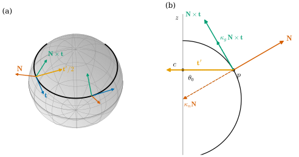
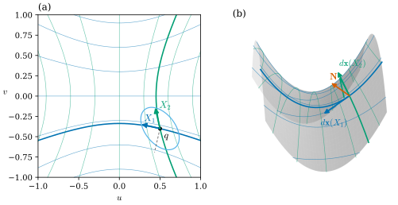
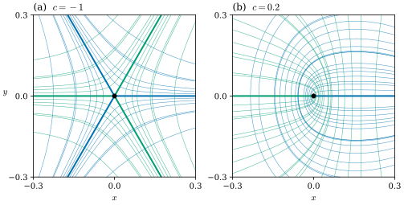

39.2 Normal and Principal Curvatures
Goals
- surface 위 곡선의 Darboux frame을 정의하고, 곡선의 curvature vector를 normal curvature와 geodesic curvature로 나누어 \(\kappa^2 = \kappa_n^2 + \kappa_g^2\)를 증명할 수 있다.
- normal curvature가 방향만의 함수 \(\kappa_n(X) = g(\mathsf{W}X, X)/g(X, X)\)임을 form의 언어로 보이고, principal curvature와 principal direction을 \(W\)의 eigenvalue와 eigenvector로 읽을 수 있다.
- Euler's formula로 normal curvature의 범위를 구하고, principal direction이 parameter 평면에서는 수직이 아니어도 induced metric에 대해 수직임을 확인할 수 있다.
- umbilical point와 line of curvature를 알아보고, umbilic 근처에서 line of curvature가 어떤 모양을 이루는지 그림으로 읽을 수 있다.
Prerequisites
- Section 39.1: Proposition 39.1.2(\(-d\mathbf{N} = d\mathbf{x}\circ\mathsf{W}\)), Proposition 39.1.5(self-adjoint), Example 39.1.3, Example 39.1.4, Conventions 상자.
- Chapter 37: adapted frame Definition 37.3.4와 그 방정식 Proposition 37.3.7, Frenet frame(Example 37.3.1).
- Chapter 38: \(\mathbf{N}\times d\mathbf{x}\)가 tangent vector를 \(+90^\circ\) 돌린다는 것 Proposition 38.3.6.
- Track 3에서 상기할 것: normal curvature Definition 8.2.4, Meusnier Theorem 8.2.5, spectral theorem Theorem 8.3.3, principal curvature Definition 8.3.4, Euler's formula Theorem 8.3.5.
Motivation
Section 39.1은 normal이 바뀌는 방식을 linear map \(W = -d\mathbf{N}\) 하나로 묶었다. 이 map을 숫자로 읽으려면 방향을 하나 골라야 한다. 그 방향으로 surface 위에 곡선을 그리면 곡선이 휘는데, 그 휨에는 두 원인이 섞여 있다. surface 자체가 굽어서 곡선이 따라 굽는 부분과, 곡선이 surface 안에서 옆으로 꺾이는 부분이다. Chapter 37은 “surface 위에 그린 curve의 굽음을 이 두 부분으로 나눌 수 있는가?”를 묻고 끝났다.
이 절은 그 질문에 답한다. Chapter 37의 adapted frame에서 둘째와 셋째 vector를 surface에 맞추면 Darboux frame이 되고, 곡선의 curvature가 normal curvature와 geodesic curvature로 정확히 나뉜다. 앞의 것은 방향만으로 정해지고 \(W\)로 계산된다. 방향을 돌려 가며 그 값을 보면 최댓값과 최솟값이 나오는데, 그것이 \(W\)의 eigenvalue, 곧 principal curvature다.
Curves on a Surface: the Darboux Frame
immersion \(\mathbf{x}\colon U \to \R^3\)과 그 Gauss map \(\mathbf{N}\), 그리고 regular curve \(c\colon I \to U\)를 생각하자. \(\gamma = \mathbf{x}\circ c\)는 \(\R^3\)의 regular curve다(\(\gamma' = d\mathbf{x}(c')\)이고 \(d\mathbf{x}\)는 injective). \(\gamma\)를 arc length \(s\)로 매개화하고 \(\mathbf{t} = \gamma'\)이라 하자. 곡선을 따라 \(\mathbf{N}(s) := \mathbf{N}(c(s))\)로 쓴다.
Definition 39.2.1 (Darboux frame). 위의 \(\gamma = \mathbf{x}\circ c\)(arc length \(s\))에 대하여, 각 \(s\)에서의 세 vector
\[ \big(\mathbf{t}(s),\ \mathbf{N}(s)\times\mathbf{t}(s),\ \mathbf{N}(s)\big) \]
를 \(\gamma\)의 (\(\mathbf{N}\)에 대한) Darboux frame(다르부 틀)이라 한다. 이것은 \(\gamma\)를 따른 adapted frame이다(Definition 37.3.4).
adapted frame인 이유: \(\mathbf{t} = d\mathbf{x}(c')\)는 \(\mathbf{N}\)에 수직이고(Proposition 38.3.3), 둘 다 unit vector이므로 \(\mathbf{N}\times\mathbf{t}\)도 unit vector이고 둘에 수직이다. 또 \(\mathbf{t}\times(\mathbf{N}\times\mathbf{t}) = \mathbf{N}\inner{\mathbf{t}}{\mathbf{t}} - \mathbf{t}\inner{\mathbf{t}}{\mathbf{N}} = \mathbf{N}\)이므로 positively oriented다. \(\mathbf{N}\times\mathbf{t}\)는 tangent plane 안에서 \(\mathbf{t}\)를 \(+90^\circ\) 돌린 vector, 곧 surface 안에서 곡선의 “왼쪽”이다(Proposition 38.3.6(a)). frame의 순서는 do Carmo의 Darboux trihedron \((T, N\wedge T, N)\)과 같다 [dC §4-4].
Example 39.2.2 (two Darboux frames). (a) \(xy\)평면 \(\mathbf{x}(u, v) = (u, v, 0)\)(\(\mathbf{N} = e_3\)) 위의 곡선에서 \(\mathbf{N}\times\mathbf{t} = J\mathbf{t}\)이므로 Darboux frame은 Example 37.3.5(b)의 \((\mathbf{t}, J\mathbf{t}, e_3)\)이다. (b) 반지름 \(r\)인 sphere(\(\mathbf{N} = \mathbf{x}/r\), 바깥쪽)에서 colatitude \(\theta_0\)의 circle of latitude를 \(\varphi\)가 커지는 방향으로 돌면 \(\mathbf{t} = (-\sin\varphi, \cos\varphi, 0)\)이고
이다. 셋째 성분이 양수이고 meridian에 접하므로, \(\mathbf{N}\times\mathbf{t}\)는 북극 쪽을 향한다.
Non-example 39.2.3 (the Frenet frame is not the Darboux frame). Example 39.2.2(b)의 원은 반지름 \(r\sin\theta_0\)인 평면 원이므로 Frenet frame의 principal normal \(\mathbf{n}\)은 원의 중심 \((0, 0, r\cos\theta_0)\)을 향한다. \(\theta_0 \neq \pi/2\)이면 이것은 \(\pm\mathbf{N}\)도 \(\pm\mathbf{N}\times\mathbf{t}\)도 아니다. 곧 Frenet frame은 곡선만 보고 정하는 frame이고, Darboux frame은 곡선과 surface를 함께 보고 정하는 frame이다. 또 Frenet frame은 \(\kappa \gt 0\)인 곳에서만 정의되지만, Darboux frame은 cylinder의 직선 \(v \mapsto (r, 0, v)\)처럼 \(\kappa = 0\)인 곡선에서도 정의된다.
adapted frame의 방정식(Proposition 37.3.7)을 Darboux frame에 쓰면 곧바로 곡선의 굽음이 둘로 나뉜다.
Proposition 39.2.4 (Darboux equations). Definition 39.2.1의 Darboux frame에 대하여 매끄러운 함수
\[ \begin{aligned} \kappa_n &:= \inner{\mathbf{t}'}{\mathbf{N}}, \qquad \kappa_g := \inner{\mathbf{t}'}{\mathbf{N}\times\mathbf{t}}, \\ m &:= \inner{(\mathbf{N}\times\mathbf{t})'}{\mathbf{N}} \end{aligned} \]
를 두면
이고, \(\gamma\)의 curvature \(\kappa = \abs{\mathbf{t}'}\)(Definition 5.1.1)는 \(\kappa^2 = \kappa_n^2 + \kappa_g^2\)를 만족한다.
Proof. Darboux frame은 adapted frame이므로 Proposition 37.3.7을 \(\mathbf{u} = \mathbf{N}\times\mathbf{t}\), \(\mathbf{w} = \mathbf{N}\)으로 쓴다. 그 명제의 \(k_1 = \inner{\mathbf{t}'}{\mathbf{u}}\), \(k_2 = \inner{\mathbf{t}'}{\mathbf{w}}\), \(m = \inner{\mathbf{u}'}{\mathbf{w}}\)가 여기서는 \(\kappa_g\), \(\kappa_n\), \(m\)이므로 (37.3.4)가 (39.2.2)이고, 같은 명제의 \(\kappa^2 = k_1^2 + k_2^2\)가 마지막 등식이다. 함수들이 매끄러운 것은 \(\gamma\)와 \(\mathbf{N}\circ c\)가 매끄럽기 때문이다.
이 명제가 말하는 것. 곡선의 curvature vector \(\mathbf{t}'\)은 surface에 수직인 부분 \(\kappa_n\mathbf{N}\)과 tangent plane 안의 부분 \(\kappa_g\,\mathbf{N}\times\mathbf{t}\)로 나뉜다. \(\kappa_n\)을 normal curvature(법곡률)라 하고(Definition 8.2.4와 같다), \(\kappa_g\)를 geodesic curvature(측지곡률)라 한다(do Carmo의 정의 [dC §4-4]와 같은 부호. Track 3에서는 Section 9.5에서 다룬다). Track 2에서 geodesic curvature는 여기서 처음 나온다. 다음 명제가 보이듯 \(\kappa_n\)은 surface가 정하고, 곡선이 스스로 고를 수 있는 것은 \(\kappa_g\)뿐이다. \(\kappa_g \equiv 0\)인 곡선이 geodesic이고, 그 정의와 성질은 Remark 44.1.1에서 다룬다. 셋째 계수 \(m\)은 이 장에서 쓰지 않는다(do Carmo는 \(-m\)을 geodesic torsion이라 부른다 [dC §4-4] Exercise 14. Exercise 39.2.3).
부호는 두 가지 선택에 달려 있다. \(\mathbf{N}\)을 \(-\mathbf{N}\)으로 바꾸면 \(\kappa_n\)과 \(\kappa_g\)가 모두 부호를 바꾸고, 곡선을 거꾸로 돌면(\(\mathbf{t} \to -\mathbf{t}\), \(\mathbf{t}'\)은 그대로) \(\kappa_g\)만 부호를 바꾼다(Exercise 39.2.1).
Normal Curvature Depends Only on the Direction
\(\kappa_n = \inner{\mathbf{t}'}{\mathbf{N}}\)은 곡선의 2차 미분으로 정의했다. 그런데 \(\inner{\mathbf{t}}{\mathbf{N}} = 0\)을 한 번 미분하면 2차 미분이 \(\mathbf{N}\)의 1차 미분으로 바뀐다.
Proposition 39.2.5 (normal curvature depends only on the direction). \(\gamma = \mathbf{x}\circ c\)가 arc length로 매개화되어 있고 \(q = c(s_0)\), \(X = c'(s_0)\)이라 하자. 그러면 \(s_0\)에서
이다. 따라서 \(0 \neq X \in \R^2\)에 대하여 \(\kappa_n(X) := g_q(\mathsf{W}X, X)/g_q(X, X)\)로 두면, \(\mathbf{x}(q)\)를 \(d\mathbf{x}_q(X)\) 방향으로 지나는 모든 곡선 \(\mathbf{x}\circ c\)의 그 점에서의 normal curvature가 \(\kappa_n(X)\)다. \(\kappa_n(X)\)는 \(X\)의 크기와 \(\pm\)에 무관하다.
Proof. 모든 \(s\)에서 \(\inner{\mathbf{t}}{\mathbf{N}} = 0\)이다. 미분하면 \(\inner{\mathbf{t}'}{\mathbf{N}} = -\inner{\mathbf{t}}{\mathbf{N}'}\)이고, chain rule에서 \(\mathbf{t} = d\mathbf{x}(c')\), \(\mathbf{N}' = d\mathbf{N}(c')\)이다. 그러므로 \(s_0\)에서 \(\kappa_n = -\inner{d\mathbf{x}(X)}{d\mathbf{N}(X)}\)이고, (39.1.2)에서 \(-d\mathbf{N}(X) = d\mathbf{x}(\mathsf{W}X)\)이므로 \(\kappa_n = \inner{d\mathbf{x}(\mathsf{W}X)}{d\mathbf{x}(X)} = g_q(\mathsf{W}X, X)\)이다. arc length 매개화이므로 \(g_q(X, X) = \abs{\mathbf{t}}^2 = 1\)이다. 일반적인 \(X \neq 0\)은 \(X/\sqrt{g_q(X, X)}\)를 속도로 갖는 곡선(예: \(s \mapsto q + sX/\sqrt{g_q(X,X)}\))이 있고, 위 식의 오른쪽이 \(X\)에 대해 2차 동차식이므로 \(\kappa_n(X)\)는 크기와 부호에 무관하다.
Track 3의 Theorem 8.2.5(Meusnier)가 같은 사실을 \(\kappa_n = \mathrm{II}_p(\mathbf{t})\)로 적는다. 여기서는 \(d\mathbf{N}\)과 \(d\mathbf{x}\)만으로 적었다. 같은 접선을 갖는 곡선들은 normal curvature가 같고 geodesic curvature만 다를 수 있다. 그래서 Proposition 39.2.4의 \(\kappa^2 = \kappa_n^2 + \kappa_g^2\)에서 \(\kappa \ge \abs{\kappa_n(X)}\)이고, 등호는 \(\kappa_g = 0\)일 때다.
Example 39.2.6 (circles of latitude). Example 39.2.2(b)의 circle of latitude를 보자. arc length는 \(s = r\sin\theta_0\,\varphi\)이므로 \(\mathbf{t}' = \tfrac{d\mathbf{t}}{d\varphi}\cdot\tfrac{1}{r\sin\theta_0} = -\tfrac{1}{r\sin\theta_0}(\cos\varphi, \sin\varphi, 0)\)이다. \(\mathbf{N} = (\sin\theta_0\cos\varphi, \sin\theta_0\sin\varphi, \cos\theta_0)\)과 (39.2.1)에서
\[ \kappa_n = -\frac{\sin\theta_0}{r\sin\theta_0} = -\frac1r, \qquad \kappa_g = \frac{\cos\theta_0}{r\sin\theta_0} = \frac{\cot\theta_0}{r} \]
이다. \(\kappa_n^2 + \kappa_g^2 = 1/(r^2\sin^2\theta_0)\)은 반지름 \(r\sin\theta_0\)인 원의 \(\kappa^2\)와 같다. \(\kappa_n = -1/r\)은 방향에 무관하다. 바깥쪽 normal의 sphere는 어느 방향으로든 normal의 반대쪽으로 굽기 때문이다(Example 39.1.3(a)의 \(\mathsf{W} = -\tfrac1rI_2\)). \(\kappa_g\)는 북반구(\(\theta_0 \lt \pi/2\))에서 양수다. \(\varphi\)가 커지는 방향으로 돌 때 원이 surface 안에서 북극 쪽(왼쪽)으로 꺾이기 때문이다. 적도에서 \(\kappa_g = 0\)이고, 남반구에서는 음수다. 거꾸로 돌면 \(\kappa_g\)의 부호만 바뀐다. 이 \(\kappa_g\)가 Section 39.4에서 polar cap의 Gauss–Bonnet theorem을 맞춘다.
Verification: verify/v-39-2-principal-curvatures.py
Figure 39.2.1을 보자. 왼쪽 (a)는 unit sphere의 colatitude \(\pi/3\)인 원(검정)과 그 위 두 점의 Darboux frame이다. 파랑 \(\mathbf{t}\)는 원을 따라가고, 초록 \(\mathbf{N}\times\mathbf{t}\)는 북쪽을 향하며, 주홍 \(\mathbf{N}\)은 바깥을 향한다. 왼쪽 점의 주황 화살표가 curvature vector \(\mathbf{t}'\)(절반 길이)으로, 원의 중심(축 위의 점)을 향한다. 3D로는 각을 읽기 어려우므로 오른쪽 (b)에서 그 점을 지나는 meridian 평면을 정면으로 본다. 이 평면은 \(\mathbf{N}\)과 \(\mathbf{N}\times\mathbf{t}\)가 펼치는 평면이고, \(\mathbf{t}\)는 화면에 수직이다. 검은 반원이 sphere의 단면, \(c\)가 원의 중심이다. 주황 \(\mathbf{t}'\)이 \(p\)에서 \(c\)로 수평하게 가고, 그것을 \(\mathbf{N}\) 방향 성분(주홍 점선, \(\kappa_n\mathbf{N} = -\mathbf{N}\))과 \(\mathbf{N}\times\mathbf{t}\) 방향 성분(초록 점선, \(\kappa_g = 0.577\))으로 나눈 것이 (39.2.2)의 첫 식이다.

Example 39.2.7 (helices on the cylinder). running example의 helix \(\gamma(t) = (a\cos t, a\sin t, bt)\)는 반지름 \(a\)인 cylinder \(\mathbf{x}(u, v) = (a\cos u, a\sin u, v)\) 위의 곡선 \(c(t) = (t, bt)\)이다. 그 curvature vector \(\kappa\mathbf{n}\)은 축을 향하므로(Example 37.3.1) 바깥쪽 \(\mathbf{N} = (\cos t, \sin t, 0)\)의 정확히 반대 방향이다. 따라서 \(\kappa_g = 0\), \(\kappa_n = -\kappa = -a/(a^2 + b^2)\)이다. \((a, b) = (1, 0.3)\)이면 \(\kappa_n = -0.91743\)이다. helix는 cylinder 위에서 옆으로 꺾이지 않는다. cylinder를 펼치면 직선이 되는 것과 같은 사실이다(Example 8.2.7).
Verification: verify/v-39-2-principal-curvatures.py
Principal Curvatures and Euler's Formula
(39.2.3)은 normal curvature가 self-adjoint map \(\mathsf{W}_q\)(Proposition 39.1.5)의 Rayleigh quotient라는 말이다. 그러므로 방향을 바꿀 때 \(\kappa_n\)이 어떻게 변하는지는 \(\mathsf{W}_q\)의 eigenvalue가 정한다. spectral theorem(Theorem 8.3.3)을 inner product space \((\R^2, g_q)\)에 쓰면, \(\mathsf{W}_q\)는 실수 eigenvalue \(\kappa_1 \ge \kappa_2\)와 \(g_q\)-orthonormal eigenvector \(X_1, X_2\)를 갖는다. 이 둘이 principal curvature(주곡률)와 principal direction(주방향)이다(Definition 8.3.4에서 \(W_p\)의 eigenvalue와 eigenvector. Proposition 39.1.2(c)에 의해 같은 수이고, \(d\mathbf{x}_q(X_i)\)가 \(W_p\)의 eigenvector다).
\(X = \cos\vartheta\,X_1 + \sin\vartheta\,X_2\)이면 \(g_q(\mathsf{W}X, X) = \kappa_1\cos^2\vartheta + \kappa_2\sin^2\vartheta\)이고 \(g_q(X, X) = 1\)이므로(교차항은 \(g_q(X_1, X_2) = 0\)으로 사라진다)
이다. 이것이 Euler's formula(Theorem 8.3.5)이고, 따라서 \(\kappa_2 \le \kappa_n(X) \le \kappa_1\)이며 두 principal curvature가 normal curvature의 최솟값과 최댓값이다. 각 \(\vartheta\)는 \(X_1\)에서 \(X\)까지 \(g_q\)로 잰 각이다. 노트는 같은 식을 Crane의 부호로 적는다 [Cr §3.4.1].
Example 39.2.8 (principal curvatures of the running examples). Example 39.1.3의 \(\mathsf{W}\)는 모두 대각행렬이고 \(F = 0\)이므로 좌표 방향이 principal direction이다(Track 3의 같은 값은 Example 8.3.6).
- (a) sphere(바깥쪽): \(\kappa_1 = \kappa_2 = -1/r\). 모든 방향이 principal direction이다.
- (b) cylinder(바깥쪽): \(\kappa_1 = 0\)(축 방향 \(\partial_v\)), \(\kappa_2 = -1/r\)(둘레 방향 \(\partial_u\)).
- (c) torus of revolution(\(\mathbf{x}_u\times\mathbf{x}_v\), 안쪽): \(\kappa_1 = 1/r\)(meridian 방향 \(\partial_u\)), \(\kappa_2 = \cos u/(R + r\cos u)\)(circle of latitude 방향 \(\partial_v\)). (8.3.3)의 값이다.
- (d) saddle의 원점(위쪽): \(\kappa_1 = 2\)(\(x\) 방향), \(\kappa_2 = -2\)(\(y\) 방향).
Euler's formula로 Example 39.2.7을 다시 보자. 반지름 \(a\)인 cylinder에서 helix의 방향과 축 사이의 각은 \(\tan\vartheta = a/b\)를 만족하므로 \(\sin^2\vartheta = a^2/(a^2 + b^2)\)이고, \(\kappa_n = 0\cdot\cos^2\vartheta - \tfrac1a\sin^2\vartheta = -a/(a^2 + b^2)\)이다. 앞에서 구한 값과 같다. Crane의 convention(같은 \(\mathbf{N}\))으로는 모든 값의 부호가 바뀌고 순서도 바뀐다. 예를 들어 바깥쪽 normal의 cylinder에서 Crane의 principal curvature는 \(0\)과 \(1/r\)이다(Section 39.1의 Conventions 상자).
Verification: verify/v-39-2-principal-curvatures.py
좌표가 orthogonal이 아니면 principal direction은 parameter 평면에서 수직으로 보이지 않는다.
Example 39.2.9 (the saddle at \(q\)). Example 39.1.4의 \(\mathsf{W}\)(\(q = (0.5, -0.4)\), \(\mathbf{N}\) 위쪽)의 eigenvalue는 \(\kappa_{1,2} = \tfrac12\tr\mathsf{W} \pm \sqrt{(\tfrac12\tr\mathsf{W})^2 - \det\mathsf{W}}\)에서 \(\kappa_1 = 0.6783\), \(\kappa_2 = -0.8461\)이다. \(g_q\)-unit eigenvector는
\[ X_1 \approx (-0.7631,\ 0.1767), \qquad X_2 \approx (-0.1974,\ 0.8523) \]
이다(부호는 임의). 유클리드 평면 \(\R^2\)에서 두 vector가 이루는 각은 \(63.92^\circ\)다. 그러나 \(g_q(X_1, X_2) = 0\)이고, 그래서 \(d\mathbf{x}(X_1)\)과 \(d\mathbf{x}(X_2)\)는 \(\R^3\)에서 수직이다. Euler's formula를 쓰려면 \(\vartheta\)를 \(g_q\)로 재야 하는 이유가 이것이다(Exercise 39.2.6).
Verification: verify/v-39-2-principal-curvatures.py
Figure 39.2.2의 왼쪽 (a)는 \(uv\) 평면이다. 파란 곡선과 초록 곡선은 각각 \(\kappa_1\), \(\kappa_2\)의 principal direction을 따라가는 곡선, 곧 아래의 line of curvature이고, \(q\)를 지나는 둘을 굵게 그렸다. \(q\)에서 파랑 \(X_1\)과 초록 \(X_2\)는 비스듬히 만난다. 회색 점선이 \(X_1\)의 유클리드 수직 방향인데, \(X_2\)와 다르다. 하늘색 타원은 \(g_q\)-길이가 \(0.3\)인 vector들의 끝점이다. 오른쪽 (b)는 같은 곡선들을 saddle 위에 올린 것이다. 이제 \(q\)를 지나는 파란 곡선과 초록 곡선은 수직으로 만나고, 화살표 \(d\mathbf{x}(X_1)\)과 \(d\mathbf{x}(X_2)\)도 수직이다. 파란 곡선과 초록 곡선은 saddle 전체에서 서로 수직으로 만나는 그물을 이룬다.

Umbilical Points and Lines of Curvature
\(\kappa_1 = \kappa_2\)인 점을 umbilical point(배꼽점)라 한다(Definition 8.3.7). 그런 점에서는 \(\mathsf{W}_q = \kappa_1 I_2\)이고 모든 방향이 principal direction이다. 반지름 \(r\)인 sphere는 모든 점이 umbilical point이고, 거꾸로 connected surface의 모든 점이 umbilical point이면 그것은 평면이나 sphere의 일부다(Theorem 8.3.9). torus of revolution에는 umbilical point가 없다. \(\kappa_1 - \kappa_2 = R/(r(R + r\cos u)) \gt 0\)이기 때문이다.
Example 39.2.10 (the umbilics of an ellipsoid). 세 반축이 \(a \gt b \gt c \gt 0\)인 ellipsoid \(x^2/a^2 + y^2/b^2 + z^2/c^2 = 1\)에는 umbilical point가 정확히 네 개 있고, 가장 긴 축과 가장 짧은 축이 펼치는 평면 위의 점
\[ \Big(\pm a\sqrt{\tfrac{a^2 - b^2}{a^2 - c^2}},\ 0,\ \pm c\sqrt{\tfrac{b^2 - c^2}{a^2 - c^2}}\Big) \]
이다. 이것은 고전적인 결과이고 여기서는 증명하지 않는다. \((a, b, c) = (2, 1.5, 1)\)(Exercise 39.1.5의 ellipsoid)이면 \((\pm 1.5275, 0, \pm 0.6455)\)이고, 바깥쪽 normal에서 그 점들의 \(\kappa_1 = \kappa_2 = -ac/b^3 = -0.5926\)이다. verify는 이 네 점에서 \(\kappa_1 = \kappa_2\)임을, 그리고 매개화의 격자 위 다른 곳에서는 \(\kappa_1 - \kappa_2\)가 \(0\)에 가깝지 않음을 수치로 확인한다.
Verification: verify/v-39-2-principal-curvatures.py
umbilical point가 아닌 점의 근방에서는 principal direction이 매끄러운 두 line field를 이룬다. 그 line field를 따라가는 곡선, 곧 접선이 언제나 principal direction인 곡선이 line of curvature(곡률선)다(Definition 8.3.10). 두 family는 서로 수직으로 만나는 그물(net)을 이룬다. running example에서는 좌표곡선이 line of curvature다. torus와 cylinder의 meridian과 circle of latitude, saddle 원점의 두 축이 그렇다. 곡선이 line of curvature일 필요충분조건은 Darboux equations의 \(m\)이 \(0\)인 것이다(Exercise 39.2.3, Rodrigues' criterion Proposition 8.3.11).
umbilical point에서는 principal direction이 정해지지 않으므로 그물이 특이점을 갖는다. 그 모양을 보려면 umbilic을 갖는 surface를 하나 만들면 된다. \(z = f(x, y) = \tfrac12(x^2 + y^2) + \tfrac16(x^3 + 3c\,xy^2)\)의 원점은 \(\kappa_1 = \kappa_2 = 1\)인 umbilical point다(2차 항이 \(\tfrac12(x^2 + y^2)\)이고 원점에서 \(\nabla f = 0\)이기 때문이다. Proposition 8.2.10). 3차 항이 그물의 모양을 정한다.
Figure 39.2.3은 두 경우의 그물을 \(xy\) 평면에 그린 것이다. (a)의 \(c = -1\)에서는 원점에서 굵은 곡선이 여섯 개 나간다. 파란 것 셋(\(0^\circ, 120^\circ, 240^\circ\))과 초록 것 셋(\(60^\circ, 180^\circ, 300^\circ\))이다. 한쪽 끝이 umbilic인 이런 line of curvature를 separatrix(분리선)라 부른다. 강의 슬라이드는 양쪽 끝이 모두 umbilic에서 끝나는 line of curvature를 separatrix라 부르고, 그것들이 그물을 규칙적인 조각들로 나눌 수 있다고 설명한다 [CMU-DDG L15] slide 24. 다른 곡선들은 원점 가까이 왔다가 휘어서 멀어지며, 세 쌍의 separatrix가 그물을 여섯 조각으로 나눈다. (b)의 \(c = 1/5\)에서는 separatrix가 family마다 하나뿐이다(파랑은 \(+x\) 방향, 초록은 \(-x\) 방향). 파란 곡선들은 원점을 감싸며 돌아 나간다. 원점을 한 바퀴 도는 동안 파란 line field의 방향이 도는 각을 재면 (a)에서 \(-\pi\), (b)에서 \(+\pi\)다. 곧 line field의 index가 \(-\tfrac12\)과 \(+\tfrac12\)이다. 강의 슬라이드는 이런 모양들을 star, lemon 등으로 부르고 종류별 개수에 대한 관계식을 소개한다 [CMU-DDG L15] slide 32. 그 관계식은 닫힌 surface에서 umbilic들의 index의 합이 \(\chi\)라는 것으로, line field에 대한 Poincaré–Hopf theorem의 한 경우다. 여기서는 증명하지 않는다. 예를 들어 ellipsoid의 네 umbilic은 모두 index \(+\tfrac12\)이고(verify), 합 \(2\)가 sphere의 \(\chi\)다. line of curvature가 umbilic에 닿지 않고 계속 감기는 일도 흔하다 [CMU-DDG L15] slide 24.

Summary
- surface 위 곡선의 Darboux frame \((\mathbf{t}, \mathbf{N}\times\mathbf{t}, \mathbf{N})\)은 adapted frame이고, \(\mathbf{t}' = \kappa_g\,\mathbf{N}\times\mathbf{t} + \kappa_n\mathbf{N}\), \(\kappa^2 = \kappa_n^2 + \kappa_g^2\)이다(Proposition 39.2.4).
- normal curvature는 방향만의 함수 \(\kappa_n(X) = g(\mathsf{W}X, X)/g(X, X)\) \(= -\inner{d\mathbf{N}(X)}{d\mathbf{x}(X)}/\abs{d\mathbf{x}(X)}^2\)이다(Proposition 39.2.5). 곡선이 고를 수 있는 것은 \(\kappa_g\)뿐이다.
- principal curvature \(\kappa_1 \ge \kappa_2\)는 \(\mathsf{W}\)의 eigenvalue이고 principal direction은 \(g\)-orthonormal하며, \(\kappa_n = \kappa_1\cos^2\vartheta + \kappa_2\sin^2\vartheta\)이다. parameter 평면에서는 수직으로 보이지 않을 수 있다(Example 39.2.9).
- umbilical point에서는 principal direction이 정해지지 않고, line of curvature의 그물이 separatrix를 갖는 특이점을 이룬다(Figure 39.2.3).
- 강의의 \(\kappa_g\)(slide 11)와 \(\kappa_n\)(slide 17, Cr §3.4)은 이 study set과 부호가 반대다. slide 11의 \(\kappa_n\)은 같다.
다음 절에서는 두 principal curvature를 하나의 수로 묶는다. 곱 \(K\)와 평균 \(H\)이다. \(K\)는 놀랍게도 surface 안에서만 재어도 알 수 있고, 그 증거가 작은 원판의 넓이다.
Exercises
Exercise 39.2.1 ★ surface 위의 곡선 \(\gamma\)에서 (a) 곡선을 거꾸로 돌 때(\(\tilde\gamma(s) = \gamma(-s)\)), (b) \(\mathbf{N}\)을 \(-\mathbf{N}\)으로 바꿀 때 \(\kappa_n\)과 \(\kappa_g\)가 각각 어떻게 바뀌는지 보여라.
Solution
(a) \(\tilde{\mathbf{t}}(s) = -\mathbf{t}(-s)\), \(\tilde{\mathbf{t}}'(s) = \mathbf{t}'(-s)\)이다. 그러므로 \(\tilde\kappa_n = \inner{\mathbf{t}'}{\mathbf{N}} = \kappa_n\)은 그대로이고, \(\tilde\kappa_g = \inner{\mathbf{t}'}{\mathbf{N}\times(-\mathbf{t})} = -\kappa_g\)이다. (b) \(\inner{\mathbf{t}'}{-\mathbf{N}} = -\kappa_n\), \(\inner{\mathbf{t}'}{(-\mathbf{N})\times\mathbf{t}} = -\kappa_g\)로 둘 다 부호가 바뀐다. 곧 \(\kappa_n\)은 방향(직선 \(\pm X\))에 붙은 양이고, \(\kappa_g\)는 곡선의 방향과 surface의 orientation에 함께 붙은 양이다. Implementation 상자의 처음 두 줄이 (a)다.
Exercise 39.2.2 ★ saddle \(z = x^2 - y^2\)은 직선 \(\ell(t) = (t, t, 0)\)을 포함한다. (a) \(\ell\)을 따라 \(\kappa_n = \kappa_g = 0\)임을 보여라. (b) 원점에서 (39.2.4)로 \(\kappa_n = 0\)인 방향을 모두 구하고 \(\ell\)의 방향이 그중 하나임을 확인하여라.
Solution
(a) \(\ell\)은 직선이므로 \(\ell'' = 0\)이고, 따라서 \(\mathbf{t}' = 0\)이라 \(\kappa_n = \kappa_g = 0\)이다. (\(\ell\)이 saddle 위에 있는 것은 \(t^2 - t^2 = 0\)이기 때문이다.) (b) 원점에서 \(\kappa_1 = 2\)(\(x\) 방향), \(\kappa_2 = -2\)(\(y\) 방향), \(\mathsf{g} = I_2\)이므로 \(\kappa_n = 2\cos^2\vartheta - 2\sin^2\vartheta = 2\cos 2\vartheta\)이다. \(\kappa_n = 0 \iff \vartheta = \pm\pi/4\)(mod \(\pi\))이고, \(\vartheta = \pi/4\)가 \(\ell\)의 방향 \((1, 1)\), \(\vartheta = -\pi/4\)는 saddle이 포함하는 다른 직선 \((t, -t, 0)\)의 방향이다. surface에 포함된 직선은 \(\kappa_n = 0\)인 방향으로만 갈 수 있다. 그런 방향은 \(\kappa_1 \ge 0 \ge \kappa_2\)일 때만 있다.
Exercise 39.2.3 ★★ (39.2.2)의 \(m\)에 대하여, \(\gamma\)가 line of curvature일 필요충분조건이 \(m \equiv 0\)임을 보여라. 이때 \(\mathbf{N}' = -\kappa_n\mathbf{t}\)이고 \(\kappa_n\)이 그 방향의 principal curvature임을 보여라. sphere의 circle of latitude에서 \(m\)을 구하여 확인하여라.
Hint
\(\mathbf{N}' = d\mathbf{N}(c') = -d\mathbf{x}(\mathsf{W}c')\)이다. \(c'\)이 \(\mathsf{W}\)의 eigenvector인 것과 \(\mathbf{N}'\)이 \(\mathbf{t}\)에 평행한 것을 비교한다.
Solution
\(\mathbf{N}' = d\mathbf{N}(c') = -d\mathbf{x}(\mathsf{W}c')\)이다((39.1.2)). \(\gamma\)가 line of curvature라는 것은 모든 \(s\)에서 \(c'\)이 \(\mathsf{W}\)의 eigenvector라는 것이다. 그러면 \(\mathsf{W}c' = \lambda c'\)이고 \(\mathbf{N}' = -\lambda\,d\mathbf{x}(c') = -\lambda\mathbf{t}\)이므로 (39.2.2)의 셋째 식과 비교하여 \(m = 0\), \(\kappa_n = \lambda\)이다. 거꾸로 \(m = 0\)이면 \(-d\mathbf{x}(\mathsf{W}c') = \mathbf{N}' = -\kappa_n\mathbf{t} = -\kappa_n\,d\mathbf{x}(c')\)이고 \(d\mathbf{x}\)가 injective이므로 \(\mathsf{W}c' = \kappa_nc'\)이다. 곧 \(c'\)은 eigenvector이고 \(\kappa_n\)은 그 eigenvalue(principal curvature)다. circle of latitude: \(\mathbf{N} = \mathbf{x}/r\)이므로 \(\mathbf{N}' = \mathbf{t}/r\)이고, \(\mathbf{N}\times\mathbf{t}\) 성분이 없으므로 \(m = 0\), \(\kappa_n = -1/r\)이다. 이것은 Track 3의 Rodrigues' criterion(Proposition 8.3.11)이다.
Exercise 39.2.4 ★ torus of revolution(\(\mathbf{x}_u\times\mathbf{x}_v\), 안쪽)의 circle of latitude \(u = u_0\)를 \(v\)가 커지는 방향으로 돈다. \(\kappa_n\)과 \(\kappa_g\)를 구하고 \(\kappa^2 = \kappa_n^2 + \kappa_g^2\)를 확인하여라. \(u_0 = 0, \pi/2, \pi\)에서의 값은?
Solution
\(\rho = R + r\cos u_0\)이라 하자. 원의 반지름이 \(\rho\)이므로 \(\mathbf{t} = (-\sin v, \cos v, 0)\), \(\mathbf{t}' = -\tfrac1\rho(\cos v, \sin v, 0)\)이다. \(\mathbf{N} = -(\cos u_0\cos v, \cos u_0\sin v, \sin u_0)\)((38.3.2))이므로 \(\mathbf{N}\times\mathbf{t} = (\sin u_0\cos v, \sin u_0\sin v, -\cos u_0)\)이다. 따라서
\[ \kappa_n = \frac{\cos u_0}{R + r\cos u_0}, \qquad \kappa_g = -\frac{\sin u_0}{R + r\cos u_0} \]
이고 \(\kappa_n^2 + \kappa_g^2 = 1/\rho^2 = \kappa^2\)이다. \(\kappa_n\)은 Example 39.2.8(c)의 \(\kappa_2\)다(circle of latitude는 line of curvature). \(u_0 = 0\): \(\kappa_n = 1/(R + r) = 0.357\), \(\kappa_g = 0\). \(u_0 = \pi\): \(\kappa_n = -1/(R - r) = -0.833\), \(\kappa_g = 0\). 두 적도는 geodesic이다. \(u_0 = \pi/2\)(꼭대기 원): \(\kappa_n = 0\), \(\kappa_g = -1/R = -0.5\). 꼭대기 원은 surface에 대해 굽지 않고 surface 안에서만 꺾인다.
Exercise 39.2.5 ★★ unit sphere 위의 arc length 곡선은 모두 \(\kappa \ge 1\)임을 보이고, \(\kappa \equiv 1\)이면 그 곡선이 great circle의 호임을 보여라.
Solution
바깥쪽 \(\mathbf{N}\)에서 \(\mathsf{W} = -I_2\)이므로 모든 방향에서 \(\kappa_n = -1\)이다(Proposition 39.2.5). Proposition 39.2.4에서 \(\kappa^2 = 1 + \kappa_g^2 \ge 1\)이다. \(\kappa \equiv 1\)이면 \(\kappa_g \equiv 0\)이고 \(\mathbf{t}' = \kappa_n\mathbf{N} = -\mathbf{N} = -\gamma\)이다. 곧 \(\gamma'' = -\gamma\)이므로 \(\gamma(s) = \mathbf{a}\cos s + \mathbf{b}\sin s\)(\(\mathbf{a} = \gamma(0)\), \(\mathbf{b} = \gamma'(0)\))이고, \(\abs{\mathbf{a}} = \abs{\mathbf{b}} = 1\), \(\inner{\mathbf{a}}{\mathbf{b}} = 0\)이므로 이것은 원점을 지나는 평면 \(\Span(\mathbf{a}, \mathbf{b})\) 위의 단위원, 곧 great circle이다. Track 3은 같은 결론을 “sphere의 geodesic은 great circle”로 얻는다(Chapter 9).
Exercise 39.2.6 ★
Coding. saddle의 점 \(q = (0.5, -0.4)\)에서 \(g_q\)-orthonormal principal direction \(X_1, X_2\)를 구하고, 방향 \(Y = \cos\vartheta\,X_1 + \sin\vartheta\,X_2\)(\(\vartheta = 0^\circ, 30^\circ, \dots, 150^\circ\))로 \(q\)를 지나는 parameter 평면의 직선 \(c(s) = q + sY\)를 잡아, Implementation 상자의 darboux로 구한 \(\kappa_n\)이 Euler's formula와 같음을 확인하여라. \(X_1, X_2\)의 유클리드 각도 출력하여라.
Solution
saddle = lambda u, v: np.array([u, v, u * u - v * v])
q, h = np.array([0.5, -0.4]), 1e-4
xu = (saddle(q[0] + h, q[1]) - saddle(q[0] - h, q[1])) / (2 * h)
xv = (saddle(q[0], q[1] + h) - saddle(q[0], q[1] - h)) / (2 * h)
N = np.cross(xu, xv) / np.linalg.norm(np.cross(xu, xv))
g = np.array([[xu @ xu, xu @ xv], [xv @ xu, xv @ xv]])
hh = np.array([[2 * N[2], 0], [0, -2 * N[2]]]) # <x_uu, N> etc.; x_uu = (0, 0, 2), x_vv = (0, 0, -2)
lam, X = np.linalg.eig(np.linalg.solve(g, hh))
o = np.argsort(-lam)
k1, k2 = lam[o]
X1, X2 = (X[:, i] / np.sqrt(X[:, i] @ g @ X[:, i]) for i in o)
cosE = abs(X1 @ X2) / np.linalg.norm(X1) / np.linalg.norm(X2)
print(f"k1 {k1:+.4f} k2 {k2:+.4f} g(X1, X2) = 0: {abs(X1 @ g @ X2) < 1e-10} Euclidean angle {np.degrees(np.arccos(cosE)):.2f} deg")
for deg in range(0, 180, 30):
a = np.radians(deg)
Y = np.cos(a) * X1 + np.sin(a) * X2
kn = darboux(saddle, lambda s: tuple(q + s * Y), 0.0)[1]
print(f"angle {deg:3d} kappa_n {kn:+.5f} Euler {k1 * np.cos(a) ** 2 + k2 * np.sin(a) ** 2:+.5f}")
k1 +0.6783 k2 -0.8461 g(X1, X2) = 0: True Euclidean angle 63.92 deg
angle 0 kappa_n +0.67828 Euler +0.67828
angle 30 kappa_n +0.29718 Euler +0.29718
angle 60 kappa_n -0.46503 Euler -0.46503
angle 90 kappa_n -0.84614 Euler -0.84614
angle 120 kappa_n -0.46503 Euler -0.46503
angle 150 kappa_n +0.29718 Euler +0.29718여섯 방향 모두 \(\kappa_n\)이 Euler's formula와 소수 다섯째 자리까지 같다. \(\vartheta\)를 \(g_q\)로 잰 각으로 잡았기 때문이다. 같은 \(\vartheta\)를 parameter 평면의 유클리드 각으로 잡으면 맞지 않는다. 두 principal direction의 유클리드 각이 \(90^\circ\)가 아니라 \(63.92^\circ\)이기 때문이다(Example 39.2.9). 직선 \(c(s)\)의 상은 saddle 위의 곡선이고 \(\kappa_g\)는 방향마다 다르지만, \(\kappa_n\)은 방향만으로 정해진다(Proposition 39.2.5).